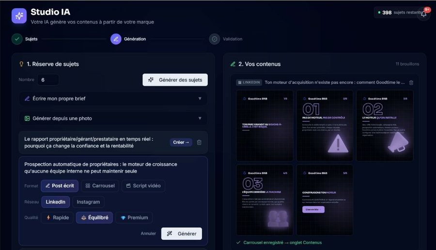

Entre le manque de temps, l'irrégularité et les outils éparpillés, on lâche vite. Postorico change la donne.
Une connexion par réseau, une seule fois. Ensuite Postorico adapte chaque post au bon format, sur le bon réseau, automatiquement.
On ne s'adresse pas à un secteur, mais à une réalité de dirigeant.
Tu fais tourner ta boîte, pas un studio de contenu. Postorico, c'est ton agence marketing de poche : du contenu unique qui colle à ta marque, en seulement 2 à 3 h par mois.
Fini le quitte ou double du stagiaire ou de l'alternant. Postorico produit dans ta voix, tu valides en un clic. Régulier sur tous les réseaux : ton ton, ta marque.
Pas de forfait limité, ni de facture à 3 000 € par mois. Publie autant que tu veux, sur tous les réseaux, et développe ta présence en ligne pour 10× moins cher.
Nos experts marketing étudient ta marque et bâtissent ton studio sur-mesure. Tu n'as plus qu'à valider et publier.
Positionnement, offres, cibles, ton de marque, concurrents. Un vrai audit, pas un formulaire.
Lignes éditoriales, angles, calendrier, calibrage de l'IA sur ta voix, et des propositions concrètes de posts et formats vidéo à ton image.
Le système est prêt : tu génères tes sujets, tu valides, tu produis tes visuels et vidéos, tu programmes. Rien ne sort sans toi.
Nous : on étudie ta marque, on paramètre tout, on crée tes modèles de visuels. Toi : ~2 h par mois pour générer, valider et publier. Tu gardes le contrôle, on porte la complexité.
« Avant je payais une agence 2 000 €/mois. Là je gère ça moi-même en quelques minutes, et c'est plus à mon image. »
« Le setup a tout changé : le système est calibré sur ma voix, je n'ai plus qu'à valider. Un gain de temps énorme. »
« Génération, planif et réponses aux commentaires au même endroit. Je ne jongle plus entre dix outils. »
Réserve ton call de setup, on étudie ta boîte, on construit ton système, tu pilotes.